คู่มือผู้ใช้ · Packaging Wizard
สอน AI ให้รู้จัก
กล่องและซองแบบใหม่
Packaging Wizard คือหน้าจอที่ให้คุณเพิ่มบรรจุภัณฑ์แบบใหม่ให้ระบบตรวจ lot อัตโนมัติรู้จัก แค่อัพรูป ลากกรอบรอบเลข lot แล้วกดเทรน คู่มือนี้พาทำทีละขั้นพร้อมภาพประกอบจากหน้าจอใช้งาน
แอปนี้คืออะไร
ระบบจะถ่ายรูปบรรจุภัณฑ์ → จำแนกว่าเป็นบรรจุภัณฑ์ชนิดไหน → หาตำแหน่งเลข lot/วันหมดอายุ → อ่านตัวเลข → เทียบกับ Google Sheet ว่าตรงไหม แต่ระบบจะทำได้เฉพาะชนิดบรรจุภัณฑ์ที่เคยถูกสอนมาแล้วเท่านั้น เมื่อมีกล่อง/ซองแบบใหม่ คุณใช้ Wizard นี้เพิ่มประเภทบรรจุภัณฑ์ใหม่ให้ระบบ
ศัพท์ที่จะเจอบ่อย
เปิดแอป & เข้าสู่ระบบ
Wizard เป็นหน้าเว็บที่ต้องเปิดผ่าน URL และล็อกอินก่อนใช้งาน ระบบอนุญาตเฉพาะบัญชี Google ขององค์กร
ที่ลงท้ายด้วย @tdfb.co
- เปิดลิงก์ Packaging Wizard ผ่านเบราว์เซอร์ ไม่เปิดไฟล์
wizard.htmlตรง ๆ จากเครื่อง - กดปุ่ม Google Sign-In แล้วเลือกบัญชี
@tdfb.co - เมื่อเข้าสู่ระบบแล้วจะเห็นหน้า Packaging Classes และอีเมลผู้ใช้ที่มุมบนขวา
เข้าสู่ระบบ
ใช้บัญชี Google ของ @tdfb.co เท่านั้น
- 1 ปุ่มเข้าสู่ระบบด้วย Google
- 2 ใช้บัญชี
@tdfb.coเท่านั้น
หน้าแรก & การ์ดบรรจุภัณฑ์
หน้าแรกแสดงบรรจุภัณฑ์ทุกชนิดที่ AI รู้จักอยู่ตอนนี้ เป็นการ์ดเรียงกัน ป้าย Live สีเขียว = ใช้งานจริงอยู่
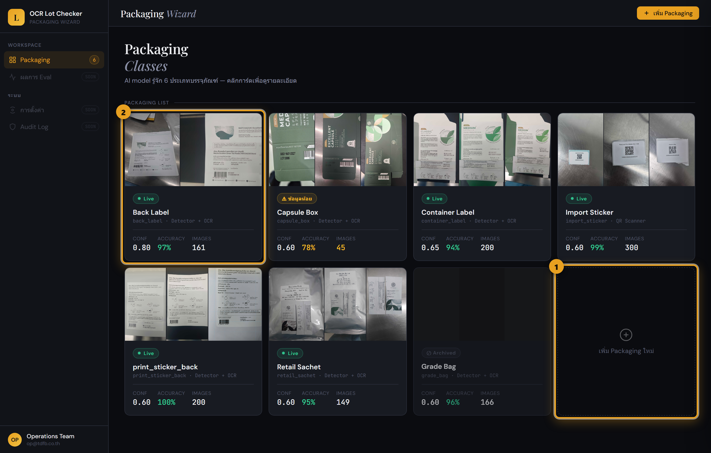
- 1 ปุ่ม “เพิ่ม Packaging ใหม่” — เริ่มสอนชนิดใหม่
- 2 การ์ดบรรจุภัณฑ์ — คลิกเพื่อดูรายละเอียด
คลิกที่การ์ดใดก็ได้ จะมีแผงรายละเอียดเลื่อนออกมาจากด้านขวา แสดงรูปตัวอย่างพร้อมกรอบที่ AI จับได้ และปุ่มจัดการ
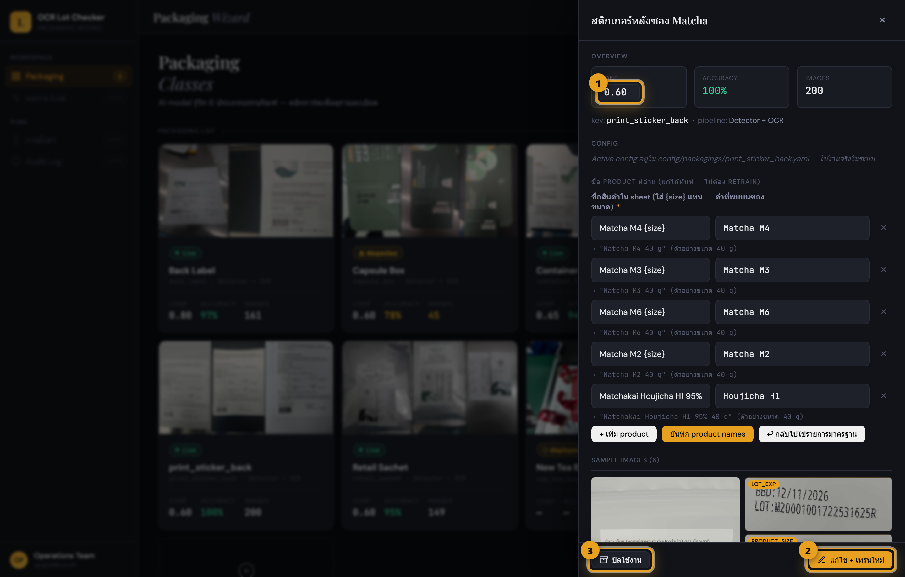
- 1 ความไวการจับ (conf) — ปรับได้ ดูหัวข้อ 07
- 2 ปุ่ม “แก้ไข + เทรนใหม่”
- 3 ปุ่ม “ปิดใช้งาน” (Archive)
ถ้าบรรจุภัณฑ์นั้นมีการอ่านชื่อสินค้า (เช่นสติกเกอร์หลังซอง Matcha) เลื่อนแผงลงไปจะเจอตัวแก้ชื่อ Product ที่อ่าน ซึ่งแก้ได้ทันทีโดยไม่ต้องเทรนใหม่ — ดูวิธีใช้ที่หัวข้อ 08
เพิ่ม Packaging ใหม่
การสอนชนิดใหม่มี 5 ขั้นตอนเรียงกัน แถบด้านซ้ายในแอปจะบอกเสมอว่าคุณอยู่ขั้นไหน เริ่มจากกดปุ่ม “เพิ่ม Packaging ใหม่” ที่หน้าแรก
ตั้งชื่อ & เลือกประเภท
บอกระบบว่าบรรจุภัณฑ์ใหม่ชื่ออะไร และข้อมูล lot อยู่รวมกันหรือกระจายหลายจุด
- พิมพ์ ชื่อแสดง เป็นภาษาคนอ่านเข้าใจ เช่น “สติกเกอร์หลังซอง Matcha”
- กรอก Key เป็นตัวพิมพ์เล็ก ตัวเลข และขีดล่างเท่านั้น เช่น
matcha_back_sticker - เลือก ประเภท Pipeline — ปกติเลือก Detector + OCR ไว้ (เลือก QR Scanner เฉพาะบรรจุภัณฑ์ที่อ่านจาก QR code)
- เลือก จุดที่จะ Crop — มีให้เลือก 3 แบบ (ดูตารางด้านล่าง)
- กด ถัดไป
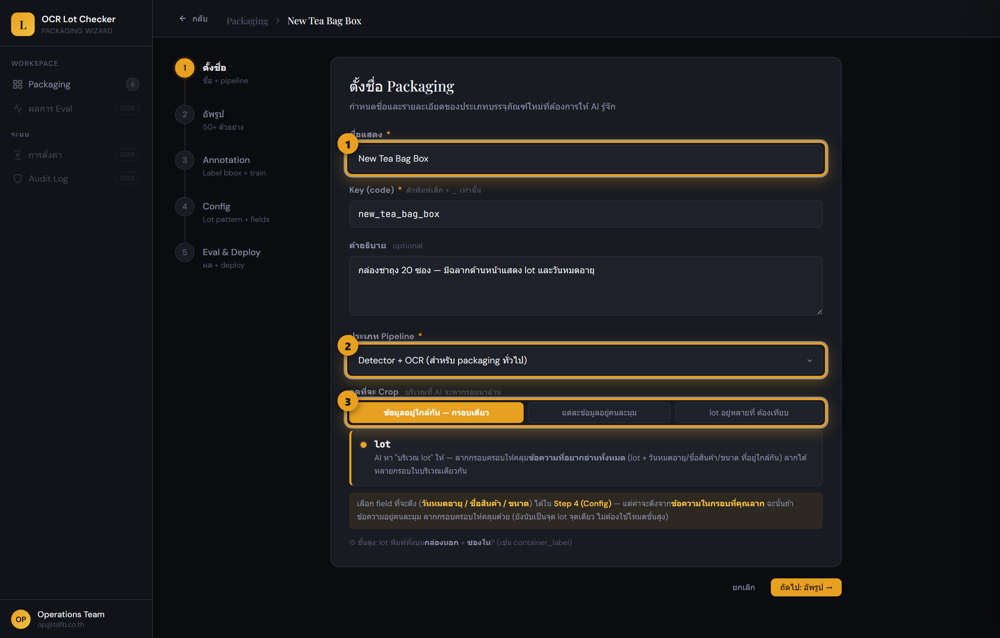
- 1 ชื่อแสดง
- 2 Key สำหรับระบบ
- 3 ประเภท Pipeline และจุดที่จะ Crop
เลือก “จุดที่จะ Crop” แบบไหน?
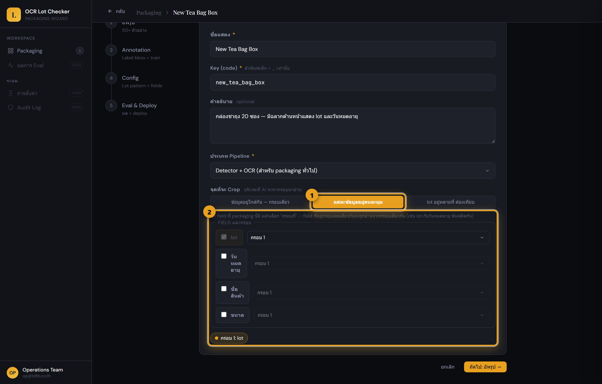
- 1 ปุ่มโหมด “แต่ละข้อมูลอยู่คนละมุม”
- 2 ติ๊ก field + เลือก “กรอบที่” ของแต่ละข้อมูล
อัพโหลดรูปตัวอย่าง
ยิ่งมีรูปหลากหลาย AI ยิ่งแม่น แนะนำ 50–200 รูป จากหลายมุม หลายระยะ และแสงต่างกัน
- คลิกพื้นที่อัพโหลด แล้วเลือกรูปจากเครื่อง (หน้าจอระบุรองรับ JPG, PNG ไม่เกิน 10MB ต่อรูป)
- รอจนแถบความคืบหน้าขึ้นครบ แล้วกด ถัดไป: Annotation
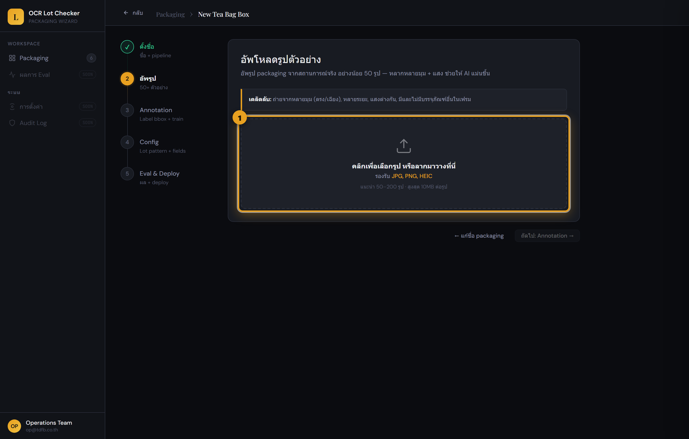
- 1 พื้นที่อัพโหลด — คลิกเพื่อเลือกรูป
ลากกรอบรอบเลข Lot
นี่คือขั้นที่คุณ “สอน” AI ด้วยมือ — บอกมันว่าเลข lot อยู่ตรงไหนในแต่ละรูป ต้องลากให้ครบอย่างน้อย 30 รูป
- คลิกรูปจากแถบด้านบนเพื่อเลือกรูปที่จะทำ
- ใช้เมาส์ลากกรอบสี่เหลี่ยมล้อมเลข lot ให้คลุมข้อความที่อยากอ่านทั้งหมด
- กดลูกศร → ไปรูปถัดไป ทำซ้ำจนแถบ Labeled ครบ 30 / 30
- เมื่อครบ ปุ่ม ถัดไป: ตั้งค่า Config สีเขียวจะขึ้นมาให้กด
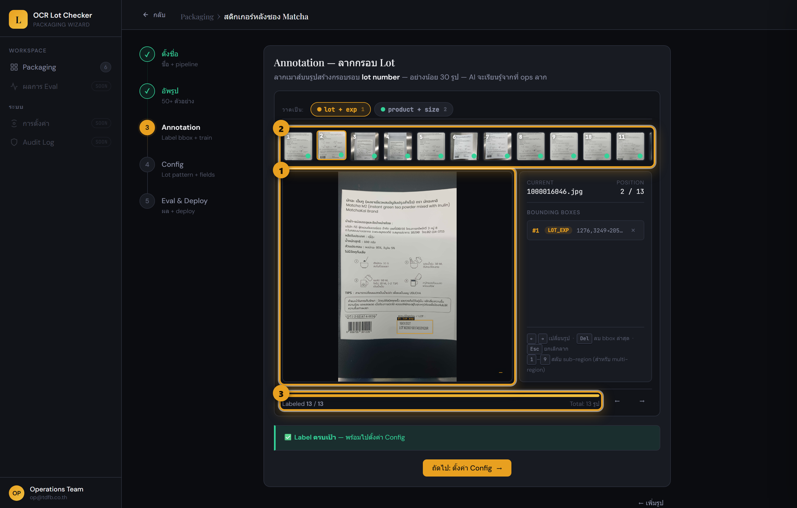
- 1 พื้นที่ลากกรอบ (กรอบทอง = ที่ลากไว้แล้ว)
- 2 แถบรูปย่อ — เขียว = ทำแล้ว
- 3 ความคืบหน้า Labeled x / 30
ถ้าเลือกโหมด “แต่ละข้อมูลอยู่คนละมุม” (multi_field)
จะมีเมนูเลือก label โผล่เหนือพื้นที่ลากกรอบ ก่อนลากแต่ละกรอบให้เลือกก่อนว่ากรอบนี้คือข้อมูลอะไร (lot / วันหมดอายุ / ชื่อสินค้า / ขนาด ตามกลุ่มที่ตั้งไว้ในขั้น 1) แล้วค่อยลาก ทำให้ครบทุก label ในแต่ละรูป
ตั้งค่า Lot Pattern & Fields
บอกระบบว่าเลข lot หน้าตาเป็นยังไง และต้องการให้ดึงข้อมูลอะไรบ้าง
- ใส่ ตัวอย่างเลข Lot จริง 3–5 ค่า — ระบบจะสร้างสูตร (pattern) ให้อัตโนมัติ และแสดง preview ว่าจับถูกไหม (เครื่องหมายถูกสีเขียว = ใช้ได้)
- เลือก Fields ที่จะดึง — Lot บังคับเสมอ ติ๊กเพิ่ม Expiry / Product Name / Size ได้ตามต้องการ
- เลือก Sheet Checks ว่าจะให้เทียบอะไรกับ Google Sheet
- เลือก Message Template รูปแบบข้อความแจ้งผลที่จะส่งไป Slack แล้วกด ถัดไป
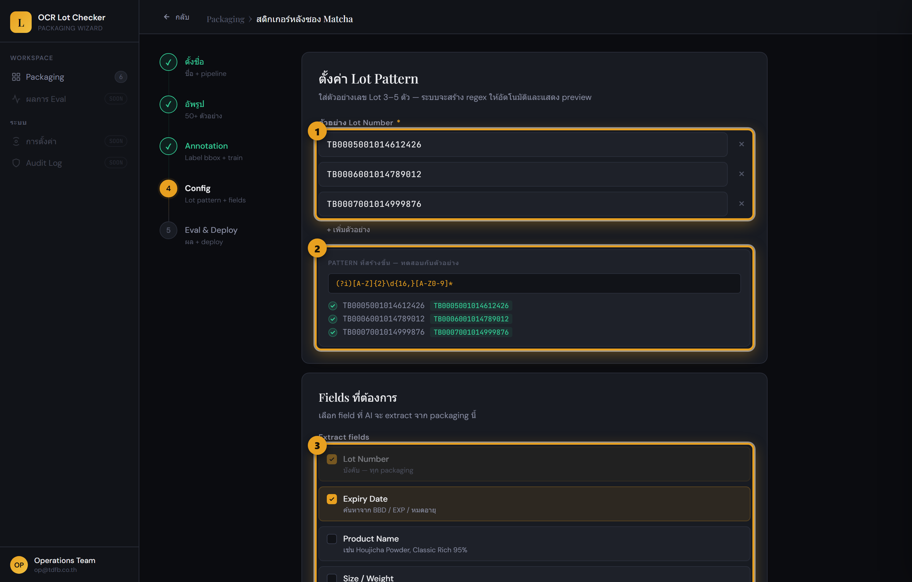
- 1 ตัวอย่างเลข Lot
- 2 Pattern ที่ระบบสร้าง + preview
- 3 Fields ที่จะดึง
ถ้าติ๊ก “Product Name”
จะมีการ์ดเพิ่มให้ตั้งชื่อสินค้า — พิมพ์ ชื่อ Product ที่ต้องตรงกับ Google Sheet และ คำที่พบบนซอง ที่ OCR น่าจะอ่านเจอ
เช่นสติกเกอร์ Matcha จะใส่คำว่า Matcha M2 คู่กับชื่อใน sheet Matcha M2 {size}
(ใส่ {size} ในชื่อได้ เพื่อให้ระบบเติมขนาดที่อ่านได้ลงไป)
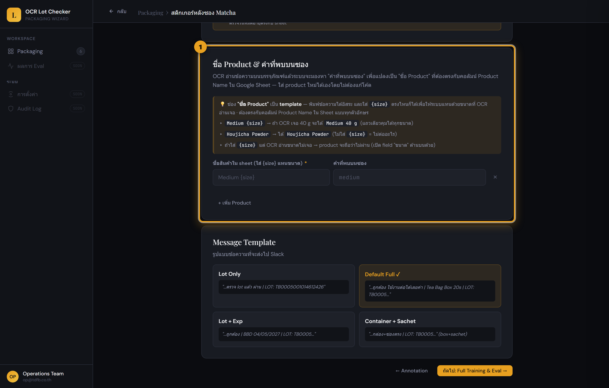
- 1 ตั้งชื่อ Product + คำที่พบบนซอง
เทรนโมเดล แล้วนำขึ้นใช้งาน
ขั้นสุดท้าย: ส่งรูปทั้งหมดไปเทรนบน Google Colab รอผล แล้วถ้าผ่านเกณฑ์ก็กด Deploy
5.1 เริ่มเทรน
- กด “Publish dataset + เปิด Training Notebook” — ระบบจะส่งรูปขึ้น Drive แล้วเปิดหน้า Colab ให้ในแท็บใหม่
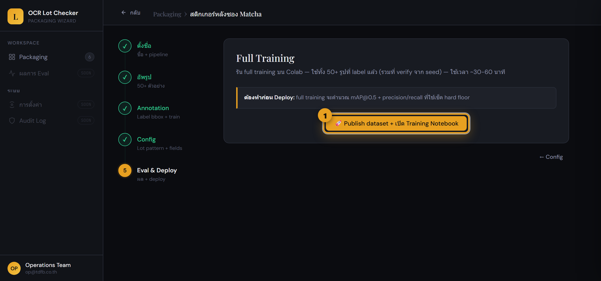
- 1 ปุ่ม Publish dataset + เปิด Notebook
5.2 รันบน Google Colab
Colab คือเครื่องเสมือนของ Google ที่ทำการเทรนให้ — ไม่ได้ใช้เครื่องของคุณประมวลผล แต่ถ้าใช้ Colab ฟรี runtime ไม่ได้การันตีและอาจถูกตัดเมื่อ idle หรือใช้งานครบโควตา
- ถ้าระบบให้ ลงชื่อเข้า Google ให้ใช้บัญชีที่เตรียมไว้
- ที่เมนูบนกด
Runtime → Run all(ภาษาไทยคือ “รันทั้งหมด”) - ถ้ามีกล่องเตือน “This notebook was not authored by Google” ให้กด Run anyway — ปลอดภัย เพราะเป็น notebook ของทีมเราเอง
- รอประมาณ 60–90 นาทีขึ้นไป จนเซลล์สุดท้ายรันจบและเขียนผลลัพธ์ครบ — ระหว่างนี้ควรเปิดแท็บ Colab ทิ้งไว้และอย่ากด Disconnect/หยุด runtime
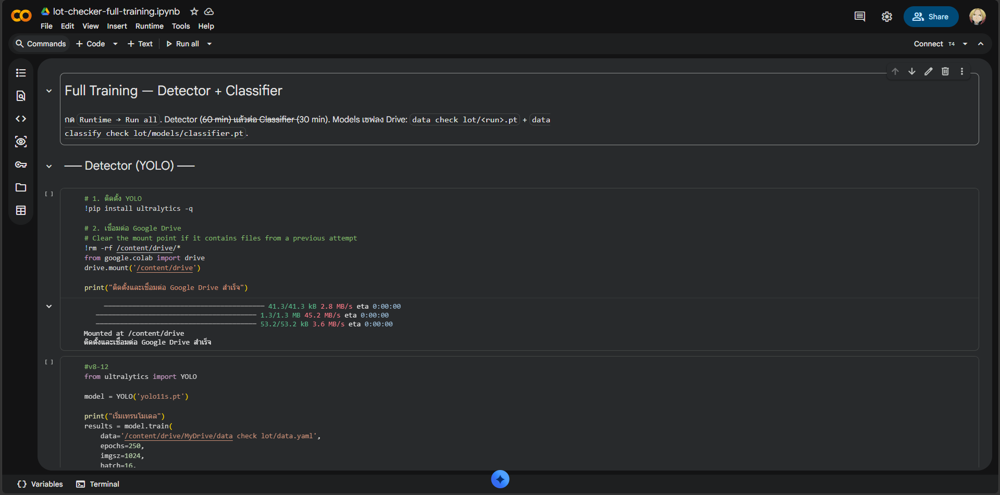
- 1 เมนู
Runtime → Run all - 2 เซลล์ Detector เริ่มจากติดตั้ง YOLO และเชื่อม Google Drive
5.3 ดึงโมเดลกลับมา
- กลับมาที่แอป กด “Train เสร็จแล้ว — ดึง model จาก Drive”
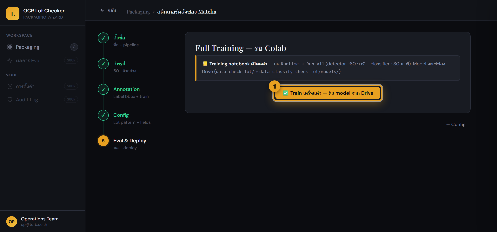
- 1 ปุ่มดึง model จาก Drive
5.4 ดูผล & Deploy
- ดู คะแนนความแม่น และแถบ Hard Floor Check — ต้องขึ้น “ผ่าน Hard Floor” สีเขียว
- ถ้าผ่าน กด “Deploy to Production” เพื่อนำขึ้นใช้งานจริง
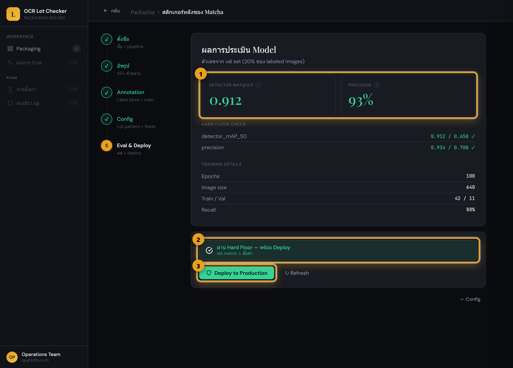
- 1 คะแนนความแม่น (mAP / Precision)
- 2 ผ่าน Hard Floor — พร้อม Deploy
- 3 ปุ่ม Deploy to Production
เมื่อ Deploy สำเร็จ หน้าจอจะแสดงสถานะว่า packaging live ใน production แล้ว ถ้าเป็นการแก้ไขของเดิม ระบบจะกลับไปหน้า Dashboard หลัง deploy สำเร็จ
- 1 สถานะ Deployed แล้ว
แก้ไข / เทรนใหม่
อยากให้บรรจุภัณฑ์เดิมแม่นขึ้น หรือเพิ่มรูปใหม่? เปิดการ์ดของมันแล้วกด “แก้ไข + เทรนใหม่” ระบบจะสร้างสำเนา (draft) ขึ้นมาให้แก้โดยไม่กระทบตัวที่ใช้งานอยู่ จนกว่าจะ Deploy ทับ
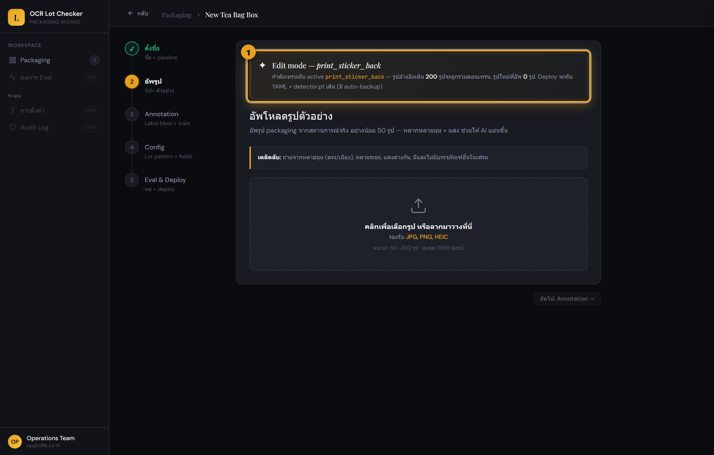
- 1 แถบ Edit mode — บอกว่ากำลังแก้ตัวไหนอยู่
ขั้นตอนเหมือนการเพิ่มใหม่ทุกอย่าง (อัพรูปเพิ่ม → ลากกรอบ → เทรน → Deploy) แต่ในขั้นลากกรอบจะมีปุ่มพิเศษ “Prelabel อัตโนมัติ” ที่ใช้โมเดลตัวเดิมช่วยใส่กรอบให้รูปใหม่ก่อน คุณแค่ตรวจและแก้ — ประหยัดเวลามาก
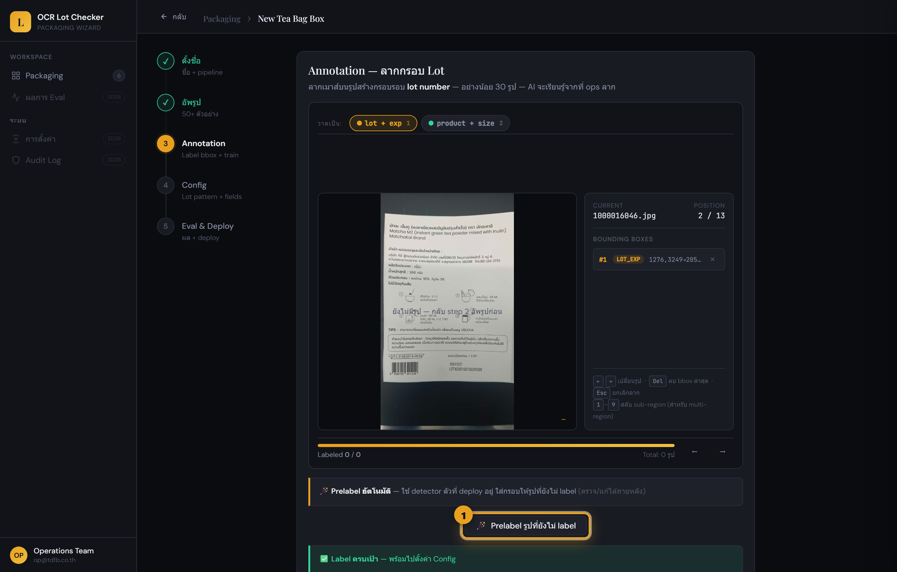
- 1 ปุ่ม Prelabel — ใส่กรอบให้อัตโนมัติ แล้วค่อยตรวจ
ปิดใช้งาน (Archive)
ถ้าเลิกใช้บรรจุภัณฑ์ชนิดไหน ให้ ปิดใช้งาน แทนการลบ — AI ยังจำคลาสนั้นได้ แต่ระบบจะไม่เอาไปตรวจจริง เปิดกลับมาใช้เมื่อไหร่ก็ได้
- เปิดการ์ดของบรรจุภัณฑ์ที่ต้องการ
- กดปุ่ม “ปิดใช้งาน” แล้วยืนยัน
- อยากเอากลับ? เปิดการ์ดเดิม (จะมีป้าย Archived) แล้วกด “เปิดใช้งานอีกครั้ง”
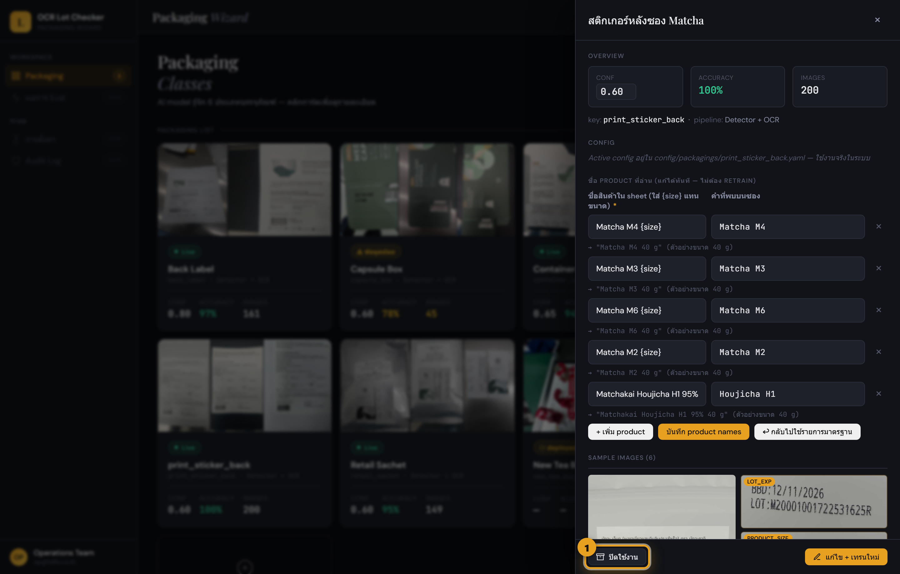
- 1 ปุ่ม “ปิดใช้งาน”
ปรับความไวการจับ
ในแผงรายละเอียดของแต่ละการ์ดมีค่า conf threshold (ความมั่นใจขั้นต่ำที่ AI จะยอมรับว่าเป็นบรรจุภัณฑ์ชนิดนั้น) ปรับได้ทันที โดยไม่ต้องเทรนใหม่
- ค่าสูง (เช่น 0.85) = เข้มงวด จับเฉพาะที่มั่นใจมาก — ลดการเดาผิด แต่บางรูปอาจถูกตีว่า “ไม่มั่นใจ”
- ค่าต่ำ (เช่น 0.55) = ยืดหยุ่น จับได้มากขึ้น — แต่เสี่ยงจับผิดชนิด
- ปรับในแผงรายละเอียด (เลข ① ในรูปหัวข้อ 03) แล้วกดบันทึก มีผลทันที
0.60 ถ้าไม่แน่ใจ ปล่อยไว้ก่อนได้ แล้วค่อยปรับเมื่อเจอปัญหาจริงแก้ชื่อ Product ที่อ่าน (ไม่ต้องเทรนใหม่)
สำหรับบรรจุภัณฑ์ที่อ่านชื่อสินค้า (มี Product Name อยู่ในรายการที่ดึง เช่นสติกเกอร์หลังซอง Matcha) คุณเพิ่ม/ลบ/แก้ชื่อสินค้าได้ทันทีจากแผงรายละเอียด โดยไม่ต้องเทรนโมเดลใหม่ — เหมาะกับตอนออกสินค้ารสใหม่หรือเปลี่ยนชื่อบน sheet
ระบบจับคู่จาก “คำที่พบบนซอง” (สิ่งที่ OCR อ่านได้) ไปเป็น “ชื่อสินค้าใน Sheet” เช่น OCR อ่านเจอ
Matcha M2 → แปลงเป็น Matcha M2 100g ที่ตรงกับ Google Sheet (ส่วน {size} ระบบเติมขนาดที่อ่านได้ให้เอง)
- เปิดการ์ดของบรรจุภัณฑ์ แล้วเลื่อนแผงรายละเอียดลงไปที่หัวข้อ “ชื่อ Product ที่อ่าน (แก้ได้ทันที — ไม่ต้อง retrain)”
- กด “+ เพิ่ม product” เพื่อเพิ่มแถวใหม่ แล้วกรอก ชื่อสินค้าใน sheet (ซ้าย) และ คำที่พบบนซอง (ขวา)
- แก้/ลบแถวเดิมได้ตามต้องการ แล้วกด “บันทึก product names” — มีผลทันที
- อยากย้อนกลับไปใช้รายการเดิมของระบบ? กด “↩ กลับไปใช้รายการมาตรฐาน”
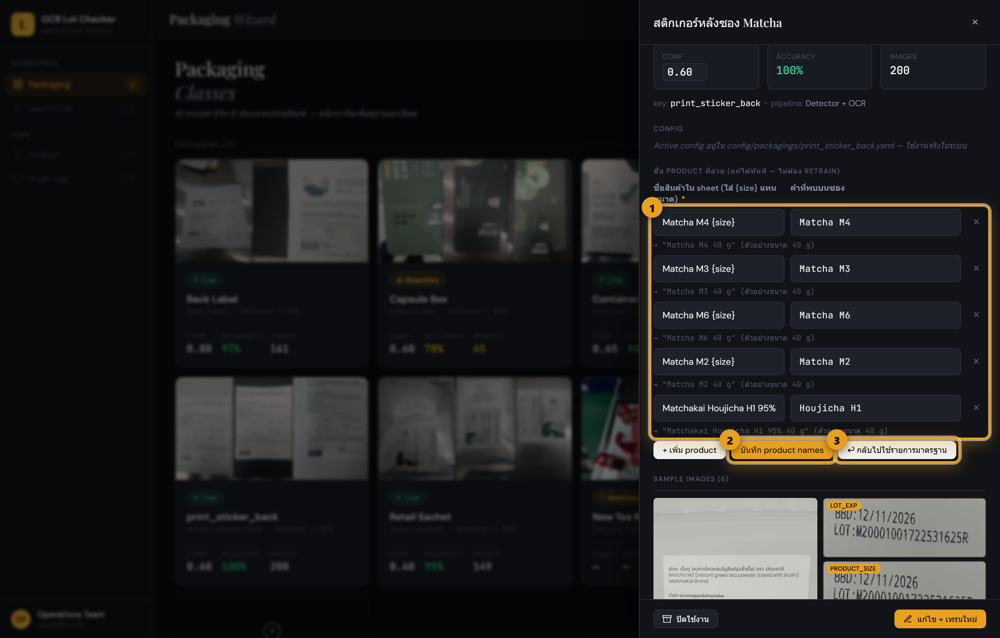
- 1 รายการคู่ ชื่อใน sheet ↔ คำที่พบบนซอง
- 2 ปุ่ม “บันทึก product names”
- 3 ปุ่ม “กลับไปใช้รายการมาตรฐาน”
แก้ปัญหาที่พบบ่อย
Qกดปุ่ม “ถัดไป” ที่ขั้นลากกรอบไม่ได้
ต้องลากกรอบให้ครบอย่างน้อย 30 รูปก่อน ดูแถบ Labeled x / 30 ด้านล่าง ถ้ายังไม่ครบ ปุ่มเขียวจะยังไม่ขึ้น — ลากเพิ่มจนครบแล้วปุ่มจะปรากฏเอง
Qอัพรูปได้ไม่ถึง 50 รูป / รูปอัพไม่ขึ้น
ตรวจว่ารูปแต่ละไฟล์ไม่เกิน 10MB และใช้ไฟล์ JPG หรือ PNG ตามที่หน้าจอรองรับ ถ้ารูปน้อย ให้ถ่ายเพิ่มจากมุมและแสงที่ต่างออกไป — ความหลากหลายสำคัญกว่าจำนวนเป๊ะ ๆ
Qเทรนเสร็จแต่ขึ้น “ไม่ผ่าน Hard Floor”
แปลว่าโมเดลยังไม่แม่นพอ มักเกิดจากรูปน้อยเกินไปหรือกรอบที่ลากไม่ตรง วิธีแก้: ใช้โหมด แก้ไข + เทรนใหม่ (หัวข้อ 05) เพิ่มรูปอีก ตรวจกรอบให้ล้อมเลข lot พอดี แล้วเทรนใหม่อีกครั้ง
Qกด “ดึง model” แล้วขึ้นว่ายังไม่เจอไฟล์
Colab ยังรันไม่เสร็จ ระบบจะเจอไฟล์ก็ต่อเมื่อ notebook รันจบครบทุกเซลล์ กลับไปดูที่แท็บ Colab ว่าเซลล์สุดท้ายเสร็จแล้วหรือยัง รอให้เสร็จแล้วค่อยกดใหม่
QColab เตือน “not authored by Google”
เป็นคำเตือนมาตรฐานของ Colab กับทุก notebook ที่ไม่ใช่ของ Google เอง กด Run anyway ได้เลย ปลอดภัย เพราะเป็น notebook ของทีมเรา
Qเผลอปิดแท็บ Colab / เน็ตหลุดระหว่างรอ
การเทรนรันอยู่บนเครื่องเสมือนของ Google ไม่ใช่คอมคุณ แต่บน Colab ฟรีไม่ควรถือว่าปิดคอมแล้วจะรันต่อได้แน่นอน เพราะ runtime อาจถูกตัดเมื่อ idle หรือครบโควตา เปิดลิงก์เดิมจากขั้นที่ 5 อีกครั้งเพื่อตรวจสถานะ ถ้ารันไม่จบให้รันต่อ/รันใหม่ตามที่ notebook บอก
Qหน้าจอค้างที่ “รอ Colab” นานมาก
ปิดหน้า Wizard ได้ เพราะสถานะ draft ถูกเซฟไว้แล้ว แต่ควรปล่อยแท็บ Colab ให้รันจนจบถ้าใช้ Colab ฟรี — เปิดการ์ด draft เดิมแล้วกด Continue setup เพื่อกลับมาที่ขั้นนี้ เมื่อ Colab เสร็จค่อยกด “ดึง model”
QDeploy ไปแล้วอยากย้อนกลับ
ตอน Deploy ทับของเดิม ระบบสำรองตัวเก่าไว้อัตโนมัติ หากต้องย้อนกลับ ให้แจ้งทีมเทคนิคเพื่อใช้ backup หรือสลับ revision ที่เหมาะสม
Qออกสินค้ารสใหม่ ต้องเทรนโมเดลใหม่ไหม
ถ้าหน้าตาบรรจุภัณฑ์ยังเหมือนเดิม เปลี่ยนแค่ชื่อ/รส — ไม่ต้องเทรนใหม่ แค่เปิดการ์ดแล้วเพิ่มชื่อสินค้าในตัวแก้ Product (หัวข้อ 08) ก็พอ จะเทรนใหม่ก็ต่อเมื่อรูปลักษณ์ของซอง/กล่องเปลี่ยนไปจริง ๆ
Qโหมด “แต่ละข้อมูลอยู่คนละมุม” ต่างจากแบบกรอบเดียวยังไง
ใช้เมื่อ lot, วันหมดอายุ, ชื่อสินค้า พิมพ์แยกกันคนละจุดในรูปจนกรอบเดียวคลุมไม่ไหว (เช่นสติกเกอร์หลังซอง Matcha) ตอนตั้งค่าขั้น 1 ให้ติ๊ก field ที่มีแล้วบอก “กรอบที่” ของแต่ละข้อมูล จากนั้นตอนลากกรอบ (ขั้น 3) ต้องสลับ label ให้ตรงกับข้อมูลทุกครั้ง ถ้าข้อมูลอยู่ใกล้กันอยู่แล้ว ใช้ “กรอบเดียว” ง่ายกว่า